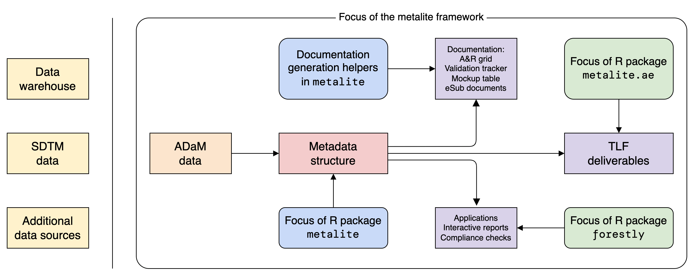

Unified representation of metadata structure for clinical analysis & reporting (A&R) by leveraging the Analysis Data Model (ADaM) datasets.

Installation
The easiest way to get metalite is to install from CRAN:
install.packages("metalite")Alternatively, to use a new feature or get a bug fix, you can install the development version of metalite from GitHub:
# install.packages("remotes")
remotes::install_github("Merck/metalite")Overview
The metalite framework is designed to:
- Standardize function input for analysis and reporting.
- Separate analysis logic from data source.
- Enable the use of pipes (
|>). - Reduce manual steps to develop and maintain documentation in clinical trial development.
- Ensure consistency between analysis specification, mock, and results.
Use cases
The metalite package offers a foundation to simplify tool development and create standard engineering workflows. For example, metalite can be used to:
- Standardize input and output for A&R functions.
- Create analysis and reporting planning grid.
- Create mock table.
- Create and validate A&R results.
- Trace analysis records.
Note: metalite is a low-level R package that needs to work with other R packages to complete the work. The idea is illustrated in the diagram above.
Design principles
We built metalite with the following principles:
- Automation: prefer a function call more than a checklist.
- Single-entry: enter in one place, sync to all deliveries.
- For example, enter data source one time for all AE analysis.
- End-to-end: cover all steps in software development lifecycle (SDLC) from define to delivery.